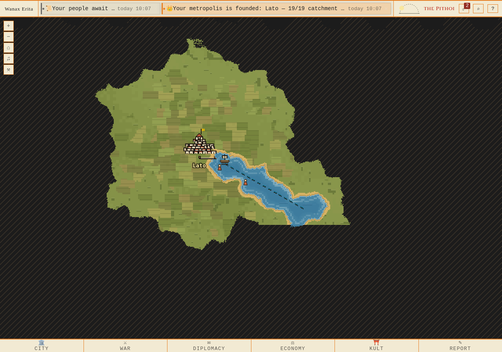
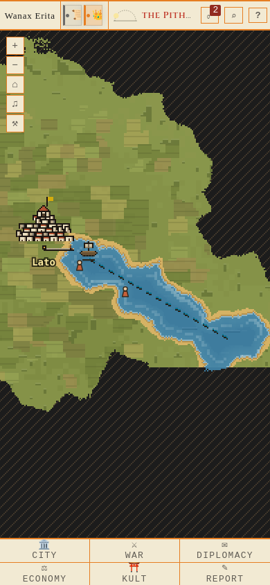
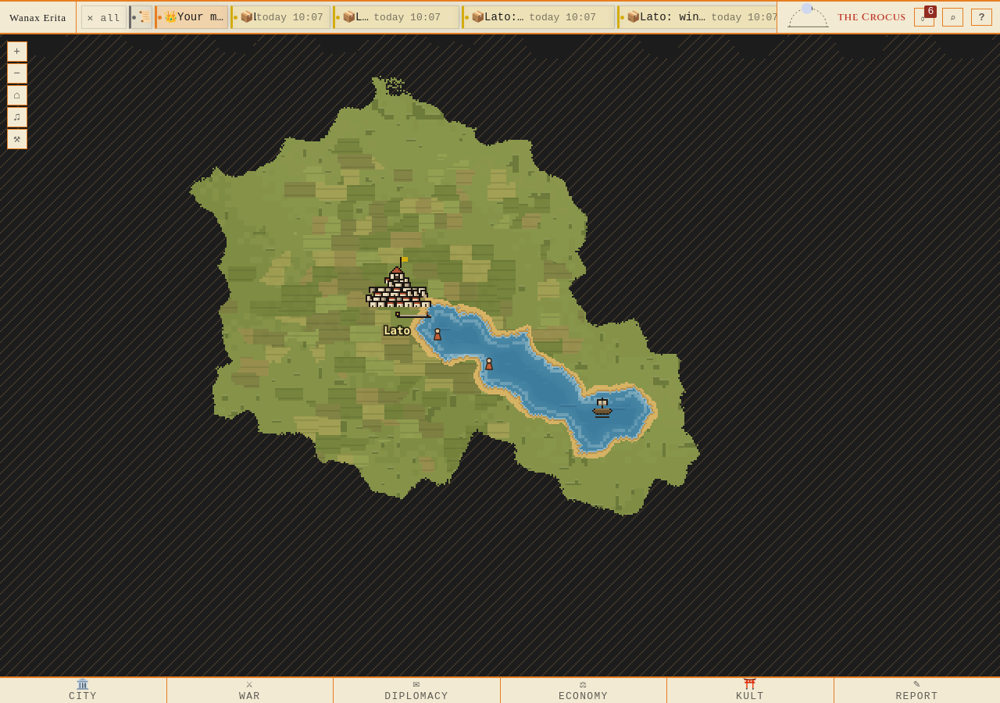
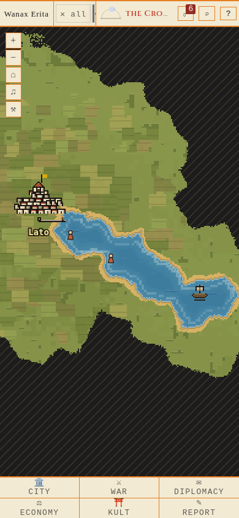
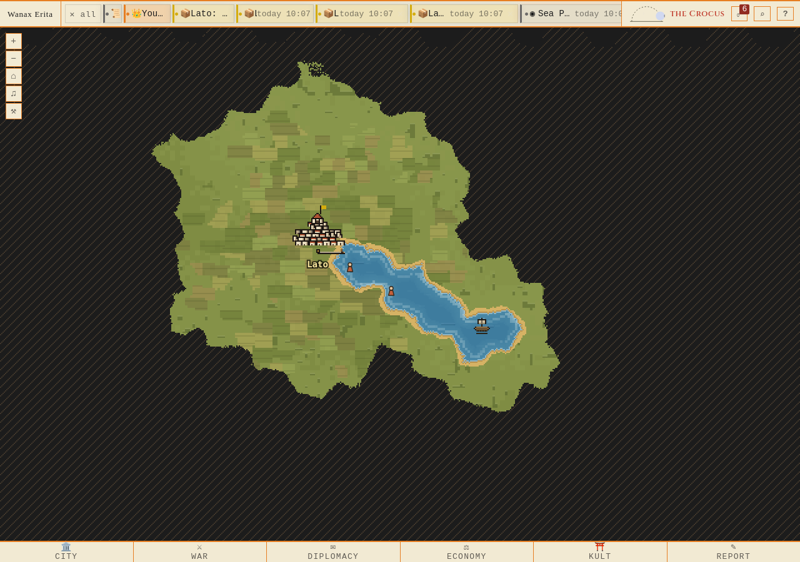

Firefox 1280×900 och 390×844. Verklig marsch från hamn, faktisk klocka, inga mockade API-svar eller DOM-ersättningar. Klicka en bild för naturlig storlek.
Build ae5988c8 · migration 213 · 944 källhashar matchar produktionen i bildriggen. Ingen deploy.
Rapport · Provenance · Lokal scenfixtur
0.4 s efter ordern · API: (31,16), marching · API · Keryx


16.4 s efter ordern · API: (32,16), marching · API · Keryx
31.4 s efter ordern · API: (34,16), marching · API · Keryx


37.4 s efter ordern · API: (34,16), positioned · API · Keryx
